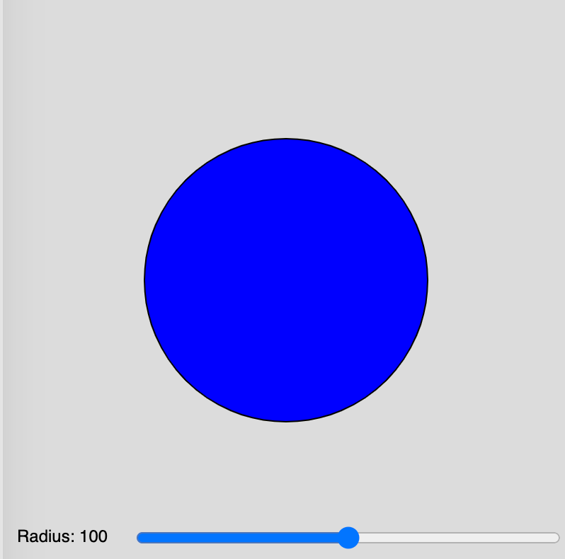
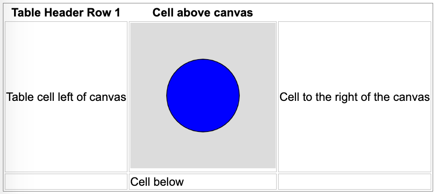

Processing Examples
All of these examples were inspired by the wonderful Val Lockhart and Troy Peterson. They were the first to get the idea to generate Processing code from ChagGPT.
Prompting Tips
Unlike popular languages like Python, there are not a lot of high-quality p5.js simulations available. So ChatGPT has to guess based on the examples it found online. Here are some of my tips.
Sliders

Sliders are the input range controls that allow users to change a value of a simulation. To get the sliders to work you need to give ChatGPT some sample code like the code below.
-
A single slider on a 400x400 canvas with label and text value. This demo controls the radius of a circle.
Single Slider Radius -
Two sliders on a 400x400 canvas that control the width and height of a rectangle.
Two Sliders Controlling a Rectangle
Sketch Container Placement

ChatGPT is not really good at placing graphic components on the screen and placing the canvas so it renders well within an HTML file.
In the setup() function we can use the canvas.parent() method to indicate the ID of the enclosing HTML div id.
1 2 3 4 5 6 7 8 9 10 | |
See the p5.js parent reference document.
Basic Examples
Circle Slider
Here is a simple example that you can start with. The ChatGPT prompt would be the following:
Generate a p5.js sketch file that draws a blue circle in the center of a
400x400 canvas. Create a range control slider that allows the radius
to be adjusted from 0 to 200. Use the text() function within the draw()
function to display the current value of the radius in the canvas.
1 2 3 4 5 6 7 8 9 10 11 12 13 14 15 16 17 18 19 20 21 22 23 24 25 26 | |
Polygon
In this example, we will use a more detailed prompt to control the placement of the sliders and their values.
Prompt:
Generate a p5.js sketch file that draws filled polygons on a 400x400 canvas.
Create one range control slider that allows the color inside the polygon
to be changed to any color. Make the default value be 170 (blue).
Create second range control slider that allows the number of points on
the polygon to vary from 3 to 10 in steps of 1. Make the default be 10.
Make the sliders be the width of the canvas. Place the sliders at the bottom
of the canvas 100 points in from the left.
Use the text() function at the end of the draw() function to display the
name and current values of the sliders.
Multi-pointed Star
Here is a p5 sketch that generates a multi-pointed star.
Here is the prompt I used to generate this program.
Generate a p5.js sketch that draws a star at the center of a 400x400 canvas.
Add a slider for the number of points on the star that ranges from 4 to 20.
Make the slider width be 360px and display the number of points by using the
text() function at the end of the draw() function.
Slope and Intercept
Students that are learning charts and plotting will learn about the slope and intercept of a line. This one is tricky since processing uses the upper-left corner as the origin and y increases as we move down the page.
Sine Wave
In this demo, we use three range controls to change the amplitude, period and phase of a sine wave.
Wave Sums
This lab demonstrates calculating the sum of different sine waves.
Pulse-Width Modulation
Pulse-width modulation is the way that microcontrollers send a precise signal to a devise such as a motor controller. This simulation models an old CRT oscilloscope display.
Brownian Motion
A classic physics simulation where the user can adjust the temperature and number of molecules in the simulation.
Conway's Game of Life
Conway's Game of Life is a simple simulator of cells. This is a class of simulation called Cellular Automata
Wire Animation
When animating circuits, we need an animation of electrons moving down a wire.
Battery Circuit
[Battery Circuit]
Virus Simulation
A classic simulation of the rate that a virus spreads in a network.
Virus Simulation
TODO - use a force-directed graph to rearrange the network.
Sierpinski Fractal Triangle
Koch Fractal Curve
Rabbit and Foxes
Simulate foxes eating rabbits.
Projectile Motion
Mass on A Spring
This is a simulator of a mass on the end of a coiled spring.
The user can change:
- The mass amount (M)
- The spring constant (K)
- The damping factor (D)
The simulation still needs some UX work. The drag-down operation is not clean and the spring could be compressed more.
Simple Maze Runner
A simple grid layout of a maze and a mouse that can only move right or down.
Maze Generator
This sample program was not created by ChatGPT but it demonstrates an algorithm for generating maze diagrams.
Videos 1. Coding Challenge #10.1: Maze Generator with p5.js - Part 1 2. Coding Challenge #10.2: Maze Generator with p5.js - Part 2 3. Coding Challenge #10.3: Maze Generator with p5.js - Part 3 4. Coding Challenge #10.4: Maze Generator with p5.js - Part 4
Depth-first search Recursive backtracker Wikipedia Page
To Dos
Here is a list of small animations that I have yet to do:
- EE - Simple circuits - battery, switch and light
- EE - Current measurement - measure the current in an LED circuit
- EE - H-Bridge - how to make a motor turn both forward and reverse using switches
- EE - Pulse-Width Modulation - how to send information from a microcontroller to a motor driver indicating the speed of a motor and the direction of a motor.
- EE - RGB LEDs - make any color by combining red, green a blue LEDs
- EE - LED Circuit
- EE - Distance sensor
- Robotics - Collision avoidance
- Robotics - Maze solving
- Robotics - Digital compass
- EE - Seven-segment display
- EE - Alphanumeric display
- EE - Character display (2 rows by 40 characters)
- EE - LED bar display
- EE - Addressable LED strip simulator
- EE - Physical computing - Microcontrollers, sensors, actuators, displays
- Robotics - Swarm robots
- EE - Color displays from red, green and blue LEDs
- Network science - vertices and edge counts - network complexity
- Network science - average degree
- Network science - in-degree and out-degree
- Network science - directed and undirected graphs
- Network science - acyclic graphs
- Network science - local communities
- Network science - traveling salesperson
- Machine learning - self-driving car
- Robot arms - degrees of freedom
- Simple gears
- AI - perceptron
- AI - bias and weights
- AI - activation functions
- AI - neural network
- AI - deep neural network
- AI - network complexity - parameter counting
- CS - bits, bytes and words
- CS - data types: strings, bytes, decimals and floats
- CS - data structures - lists, sets, arrays
- CS - sorting
- CS - recursion